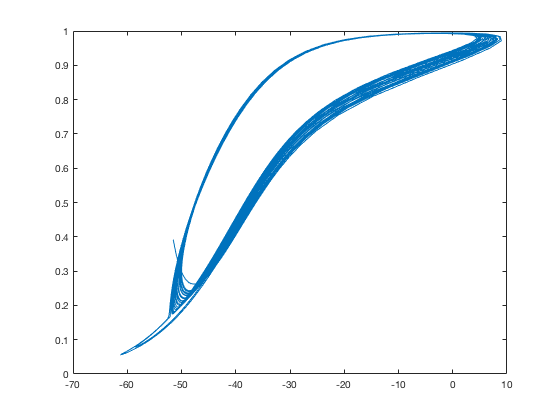
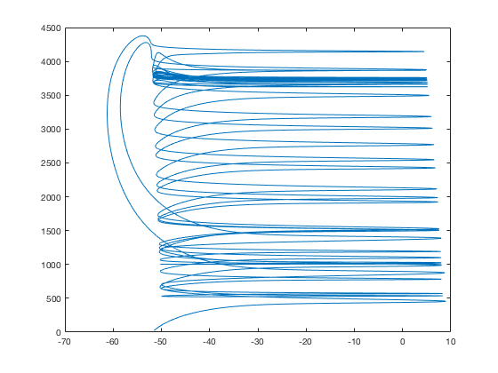
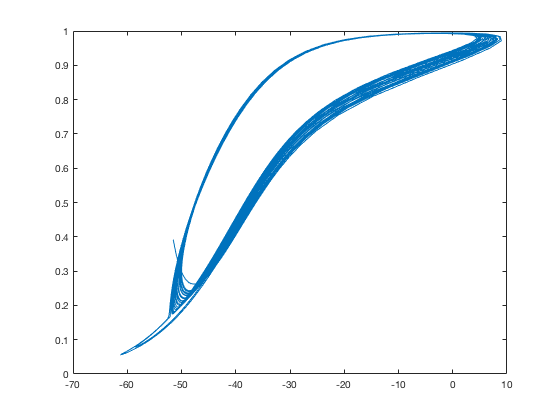
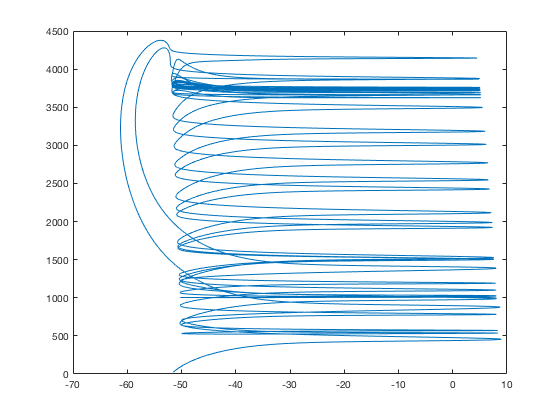

This is the readme for the models associated with the paper:
Knowlton CJ, Kutterer S, Roeper J, Canavier CC (2017)
Calcium dynamics control K-ATP channel mediated bursting in substantia
nigra dopamine neurons: a combined experimental and modeling study.
J Neurophysiol :jn.00351.2017
These model files were contributed by C Knowlton.
To build and run the model on a linux/unix platform type:
make
./fixed_finder > output.txt
./nmodel > output2.txt
After a short while an output file is generated which can be read into
your favorite graphing program. Matlab for example can produce the
following plot
load output2.txt;
a=output2;
z=4000; % look at the last couple of seconds of the run
figure
for b=2:9
subplot(2,4,b-1)
plot(a(end-z:end,1),a(end-z:end,b))
end
 A lot of the figures weren't fully scripted.
fixed_finder.c takes the same parameter changes in atp.h that atp.c
does
It will produce the appropriate nullcline for those parameters.
You just plot the results in V vs ADP (or V vs ADP and Ca in 6) rather
than in X vs t like in the other figures
Figure 6 is more complicated because additional scripting is needed to
create an array of ADP/Ca values from the ADP nullcline produced.
Additionally, matplotlib, which was used to generate that figure
cannot deal with overlapping surfaces well, so each surface had to be
broken up into pieces.
I included the scripts that automated the NMDA/NN414 permutations for
both nullclines and dynamics (script.py) and to generate a crude
version figure 6 (intersect.py) given the values (though data file
names that that script calls would have to be changed in
intersect.py). All figures in the paper had substantial work done to
clean the colors, fonts, axes in illustrator after the fact - but this
is fairly close.
python script.py <suffix>
will create the data from figure 4 in a directory called suffix with
prefixes a,b,c,d corresponding to the subplots in figure 4
a = Control
b = NN414
c = NMDA
d = NN414 + NMDA
To get the nullcline picture for NMDA alone you would plot V vs ADP
from c_<suffix>_data.dat and (7 vs 2) and from
c_<suffix>_nullcline.dat (3 vs 1). To do this run:
python script.py c
and then you could type in the matlab command prompt:
cd RELEASE/c/
load c_c_data.dat;
load c_c_nullcline.dat;
d=c_c_data;
n=c_c_nullcline;
figure
plot(d(:,2),d(:,7))

figure
plot(n(:,1),n(:,3))

To get results for figs 7 and 8 change G_GABA, TONIC (to make GABA
tonic or a pulse), fca etc in atp.h as appropriate to the values in
captions before running the script
(you can also change script.py to ignore a and b for these if desired
as they are not used)
I hope this helps
A lot of the figures weren't fully scripted.
fixed_finder.c takes the same parameter changes in atp.h that atp.c
does
It will produce the appropriate nullcline for those parameters.
You just plot the results in V vs ADP (or V vs ADP and Ca in 6) rather
than in X vs t like in the other figures
Figure 6 is more complicated because additional scripting is needed to
create an array of ADP/Ca values from the ADP nullcline produced.
Additionally, matplotlib, which was used to generate that figure
cannot deal with overlapping surfaces well, so each surface had to be
broken up into pieces.
I included the scripts that automated the NMDA/NN414 permutations for
both nullclines and dynamics (script.py) and to generate a crude
version figure 6 (intersect.py) given the values (though data file
names that that script calls would have to be changed in
intersect.py). All figures in the paper had substantial work done to
clean the colors, fonts, axes in illustrator after the fact - but this
is fairly close.
python script.py <suffix>
will create the data from figure 4 in a directory called suffix with
prefixes a,b,c,d corresponding to the subplots in figure 4
a = Control
b = NN414
c = NMDA
d = NN414 + NMDA
To get the nullcline picture for NMDA alone you would plot V vs ADP
from c_<suffix>_data.dat and (7 vs 2) and from
c_<suffix>_nullcline.dat (3 vs 1). To do this run:
python script.py c
and then you could type in the matlab command prompt:
cd RELEASE/c/
load c_c_data.dat;
load c_c_nullcline.dat;
d=c_c_data;
n=c_c_nullcline;
figure
plot(d(:,2),d(:,7))

figure
plot(n(:,1),n(:,3))

To get results for figs 7 and 8 change G_GABA, TONIC (to make GABA
tonic or a pulse), fca etc in atp.h as appropriate to the values in
captions before running the script
(you can also change script.py to ignore a and b for these if desired
as they are not used)
I hope this helps